| Date | Title | Author | Reading Time | |
|---|---|---|---|---|
| 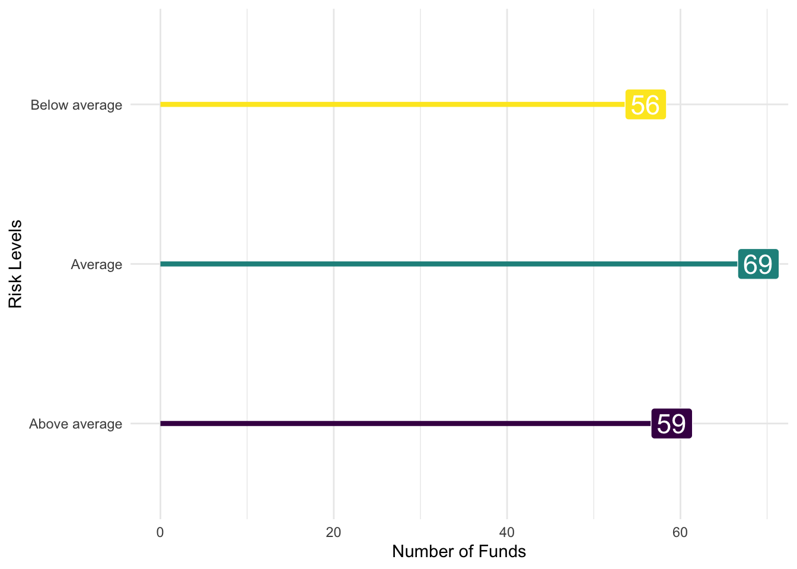 | Jan 25, 2023 | Visualizing Two Qualitative Variables | Robert W. Walker | 1 min |
|
|
Jan 25, 2023 | Visualizing One Quantitative Variable | Robert W. Walker | 6 min |
|
|
Jan 25, 2023 |
Changing the Default ggplot theme
|
Robert W. Walker | 0 min |
| 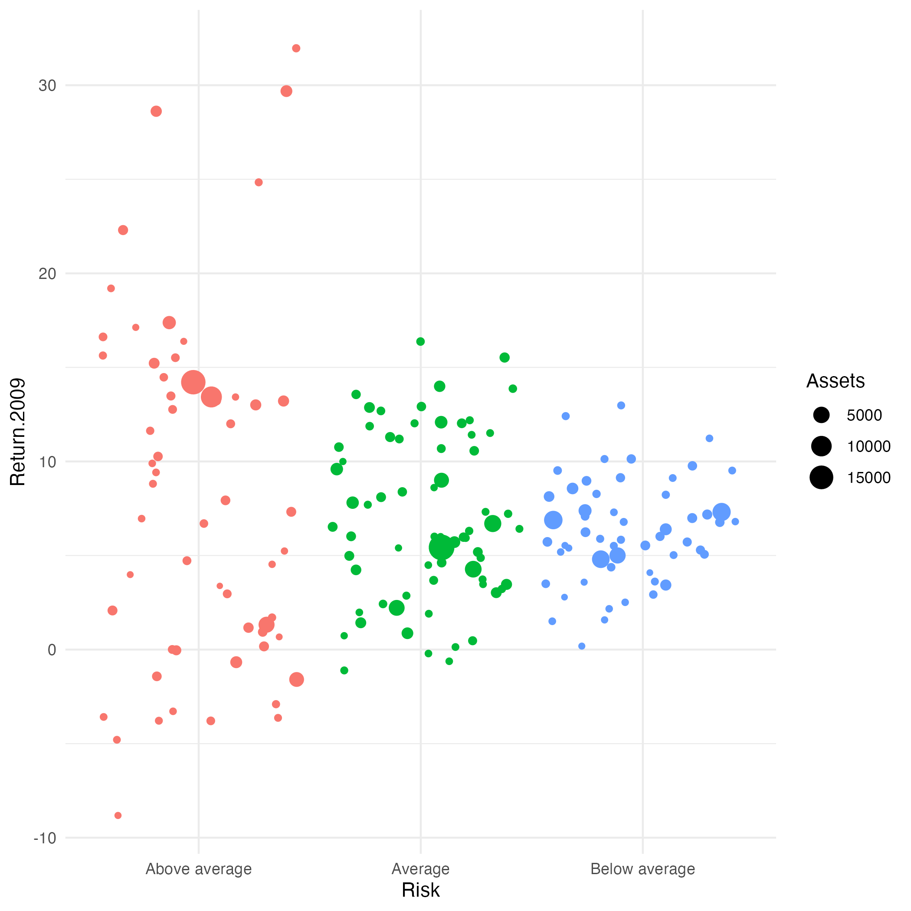 | Jan 25, 2023 | Visualizing Two Quantitative Variables | Robert W. Walker | 1 min |
|
|
Jan 25, 2023 | Visualizing One Qualitative Variable | Robert W. Walker | 4 min |
|
|
Jan 25, 2023 | Visualizing One Qualitative and One Quantitative Variable | Robert W. Walker | 2 min |
| 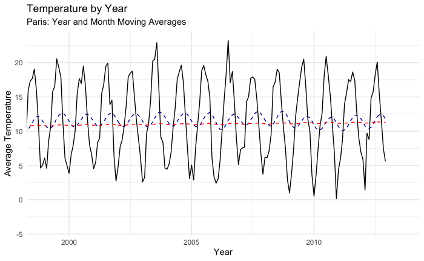 | Jan 5, 2023 | Getting Started: R and RStudio | Robert W. Walker | 0 min |

|
Jan 4, 2023 | Tutorials on Wrangling | Robert W. Walker | 0 min |
| 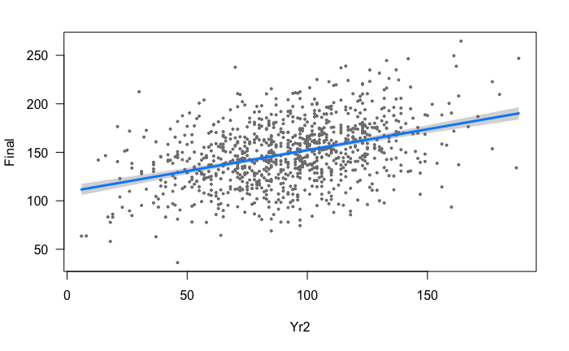 | Sep 6, 2022 | A Small Thread on Smart Prediction | Robert W. Walker | 5 min |
| 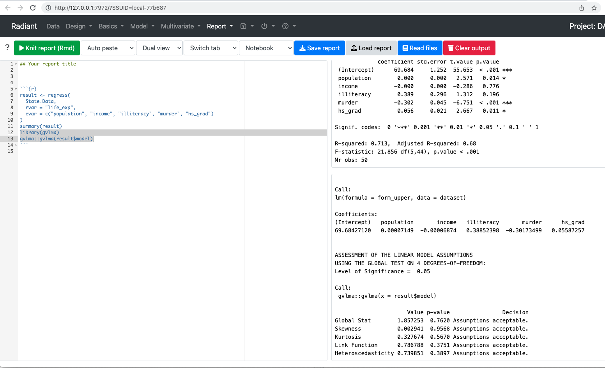 | Apr 12, 2022 | Normal Residuals in Radiant | Robert W. Walker | 1 min |
| 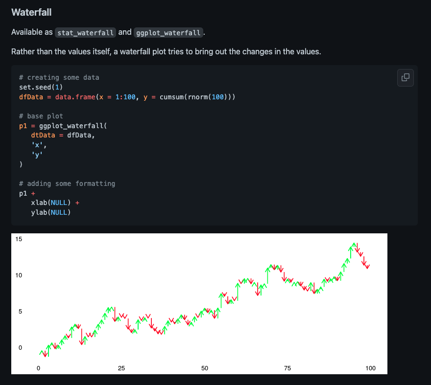 | Jun 30, 2021 | ggtimeseries | Robert W. Walker | 0 min |

|
Jun 28, 2021 | the clock package: a c port | Robert W. Walker | 0 min |
| 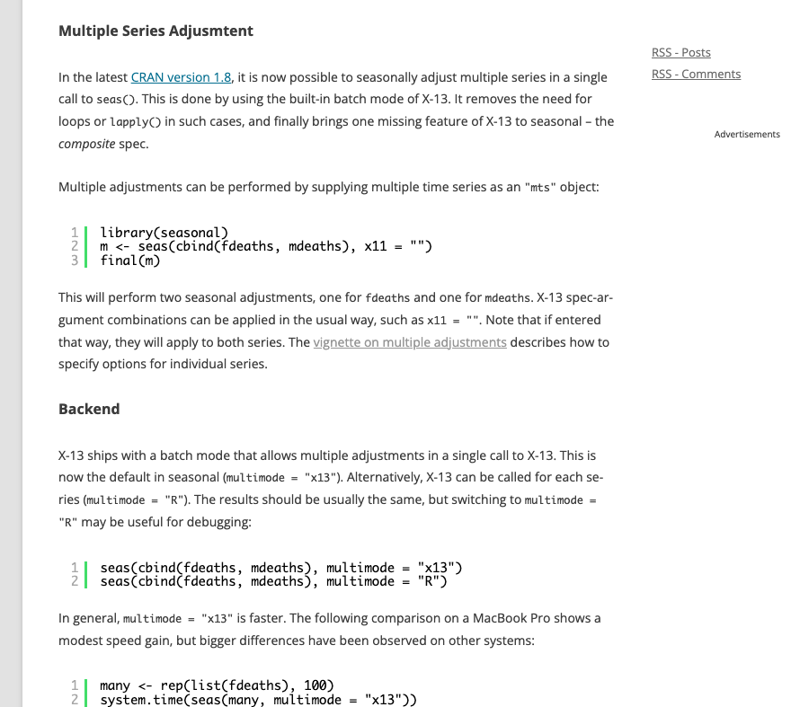 | Jun 24, 2021 | A nice post on seasonal adjustment | Robert W. Walker | 0 min |

|
Jun 24, 2021 | Easy moving averages | Robert W. Walker | 0 min |
| Jun 24, 2021 | A brief look at VIX | Robert W. Walker | 2 min | |

|
May 29, 2021 | Allison Horst teaches ACFs | Robert W. Walker | 0 min |
| 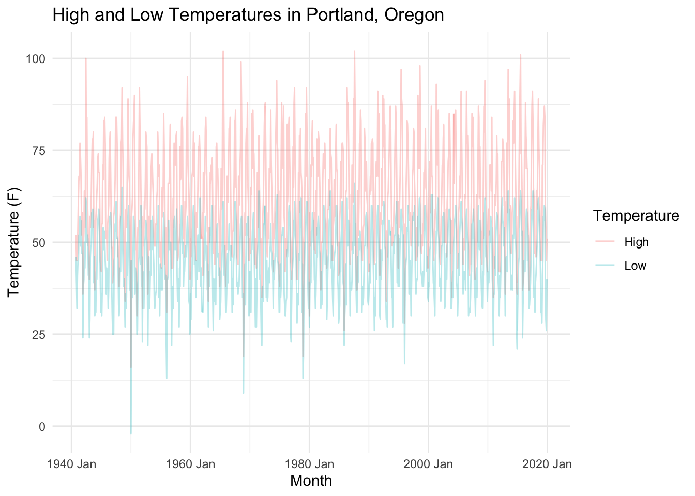 | Mar 24, 2021 | timetk is really, really handy | Robert W. Walker | 2 min |
| 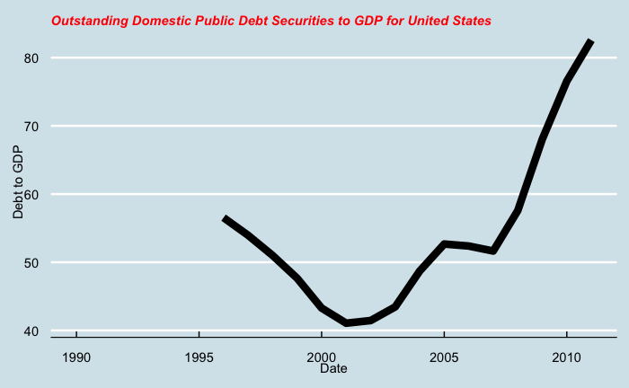 | Nov 28, 2020 | fredr: quick and dirty | Robert W. Walker | 1 min |
| 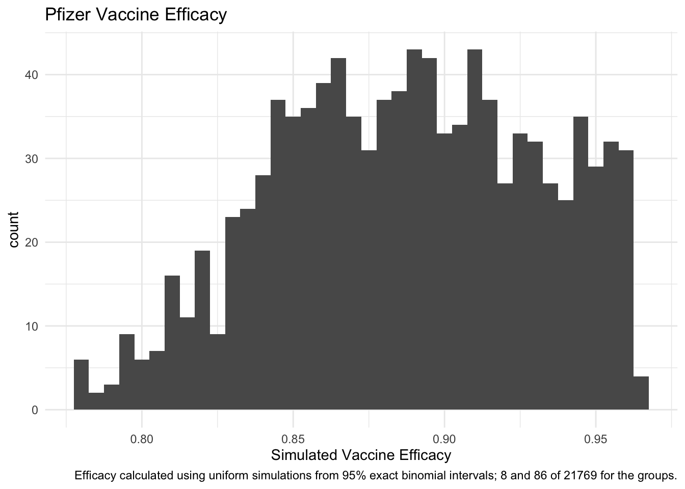 | Nov 24, 2020 | Vaccine Efficacy: A Binomial Problem | Robert W. Walker | 2 min |
|
|
Sep 13, 2020 | Importing Excel Data | Robert W. Walker | 1 min |
| 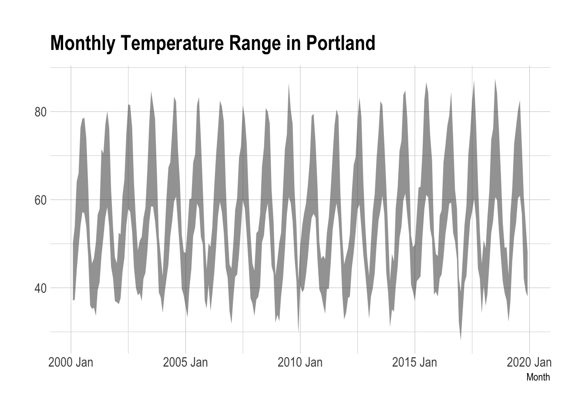 | Sep 12, 2020 | Pivoting Data: Long and Wide | Robert W. Walker | 7 min |
|
|
Oct 25, 2019 | A Quick and Dirty Introduction to R | RWW | 1 min |
|
|
Oct 9, 2019 | Tables, Pivots, Bars, and Mosaics | RWW | 16 min |

|
Jan 1, 2019 | Welcome to the FAQ for DADM | Robert W. Walker | 0 min |
No matching items